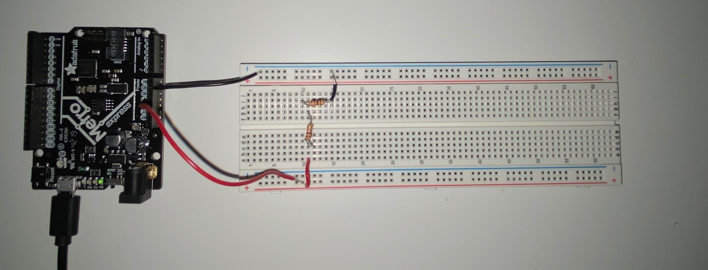
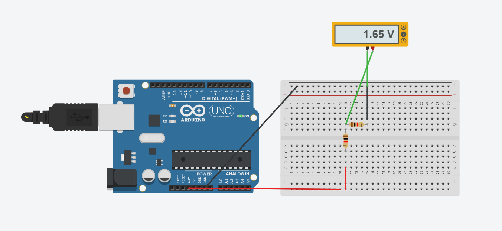

This week we started working on hands-on assignments. We were given a brief introduction on microcontrollers and electronic components in general. Microcontrollers are basically small computers in the form of a single chip. We haven't built any circuit this week without relying on it in place of a battery.
We quickly dived in and pulled out the necessary components from our kits to build our first circuit in class. We only used some wires, an LED light, a resistor, a multimeter, and a microcontroller. Our only objective was to make the light light up. Though we had to experiment with a few resistors in order to see which one was most suitable for our circuit. I used a 470 Ω resistor and found that it worked perfectly.
We then used our Arduino software to make our LED light blink by choosing the "Blink" example offered by the program itself.
The first step of our assignment was to create a circuit and use the multimeter to measure the voltages. I built a circuit with two 1k Ω resistors to divide the voltage into two.
The second step was to use Ohm's law to calculate the current through some part of the circuit. Ohm's law is V (voltage) = IR (current x resistance), where V (under the effect of the resistor) = 1.65 and R = 1000. The current was 1.65 / 1000 = 0.00165 A
The third step was to simulate our circuit in Tinkercad to see if it matched our results. It was a nice break from trying to shove the wires into the breadboard.
